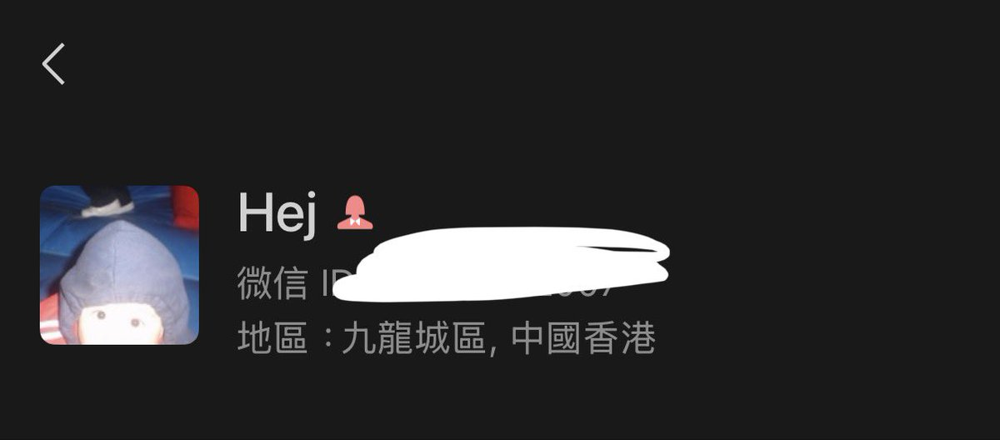
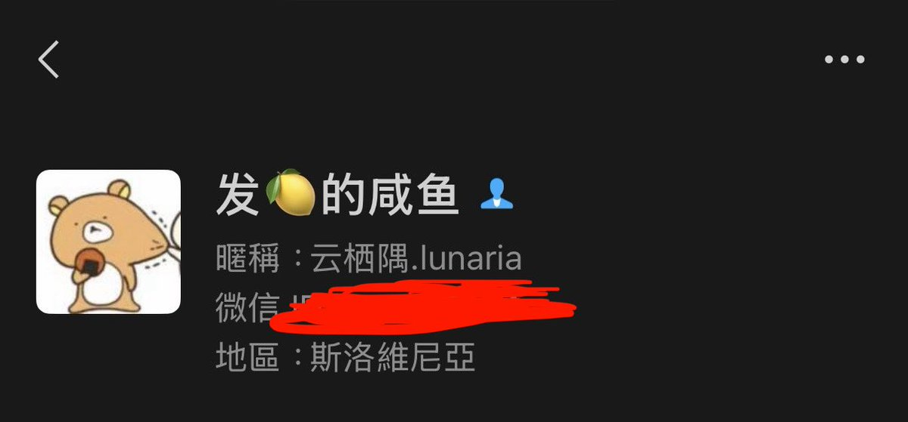

听羽 🏳️⚧️
@tingxinzhongyu
@HappyHejsDay 有一种莫名其妙的想看两人互相出柜的期待感是怎么回事🥺


𝕙𝕖𝕛😉二號機（悲傷版
@HappyHejsDay
关于我和我妹妹微信性别相反这件事 。
我觉得一个家里出现两个跨子并且还是反方向的钟的概率比并不是很大（飞天猫警告
而且近年出现端倪，他头发越来越短了😂性格和我也越来越像，我觉得我们两个几乎快成同一个人了
我觉得这是祖坟出现问题了🤔
生儿育女又生女育儿这一块 https://t.co/rB3cZeu3mo